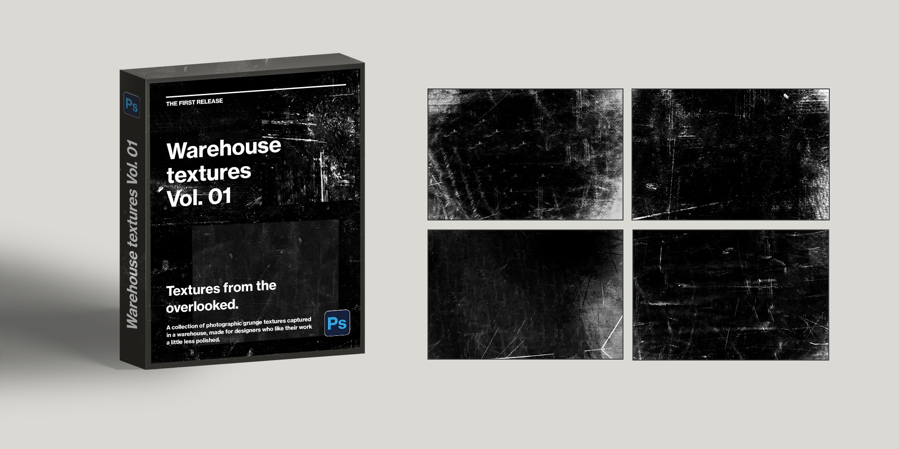

RESOURCES / 001
Textures from the overlooked.
A collection of photographic grunge textures captured in a warehouse, made for designers who like their work a little less polished.
THE FIRST RELEASE
Warehouse textures
Vol. 01
Original black-and-white photographs, prepared as versatile overlays for experimental typography, posters, editorial layouts and graphic compositions.

FREE DOWNLOADS
Made to be
layered.
Use the images as they are, or experiment with blend modes to bring their grit into your work. Exclusion is a good place to start, especially for high-contrast treatments and unexpected tonal shifts.
- Original black-and-white photographic textures, available individually
- Designed for Photoshop and other layer-based workflows
- Useful for posters, type, editorial and digital artwork
SELECT A TEXTURE ABOVE TO DOWNLOAD ITS JPG FILE.
Photographed and compiled by Divan Olivier. Use the textures to make something of your own.